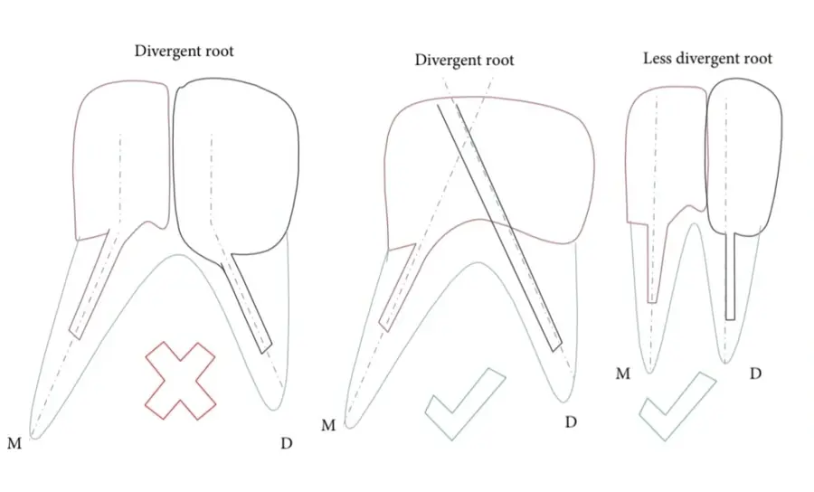

نسخه استخراجشده؛ ترجمه یا تأیید علمی انجام نشده است. وضعیت: captured
برای مولری با واگرایی کم تا متوسط، پست دو تکهی multisection برنامهریزی کردهای. دو جزء را به چه ترتیبی میسازی، و چه چیزی آنها را کنار هم نگه میدارد؟
پست دو تکه اندیکاسیونهای خاص خودش را دارد و به روشهای مختلفی ساخته میشود. در طراحی multisection:
اگر هر دو جزء روی ferrule بنشینند و زیر کراون کامل محصور شوند، حتی نیازی به قفل dovetail بینشان نیست، چون خود کراون آنها را نگه میدارد.
پست مستقیم را هم میشود با آکریل و بهصورت چیرساید ساخت؛ این کار نکاتی دارد که کیفیت ساخت را بهتر میکند.
در طراحی دوم، یک کور یکپارچه با پست کوتاه در یکی از کانالها ساخته میشود، بهعلاوهی یک پست جدا در کانال دیگر که از داخل سوراخ کور سُر میخورد.

شواهد این تکنیک از جنس گزارش کیس (case report) است، نه مطالعهی بقا؛ کل شواهد موجود دربارهی آن از همین جنس است.